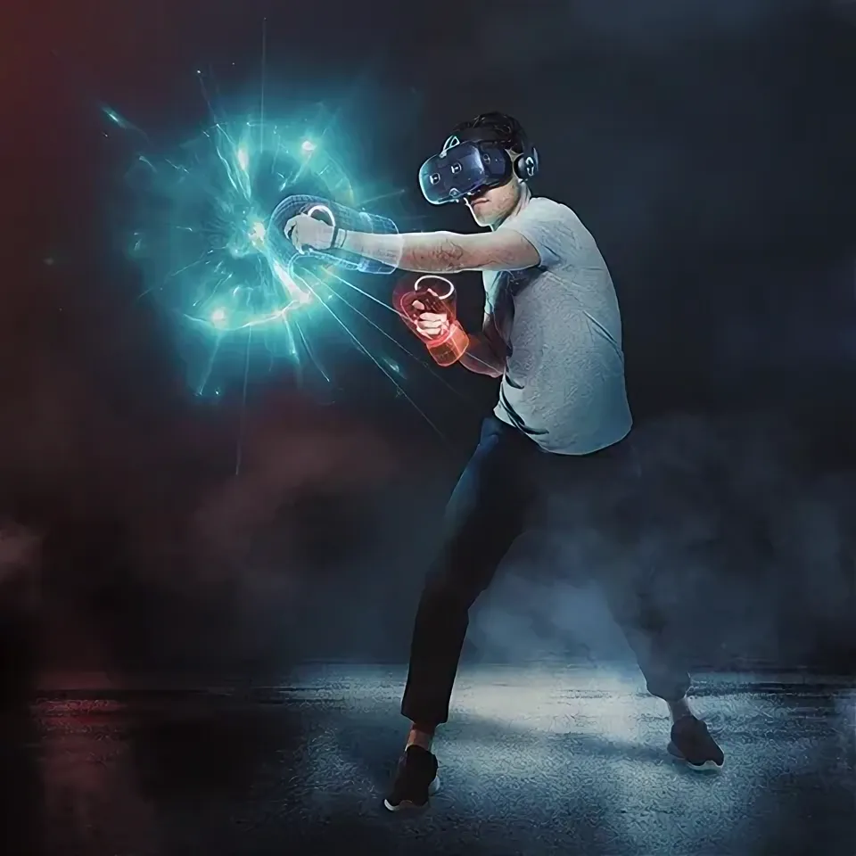
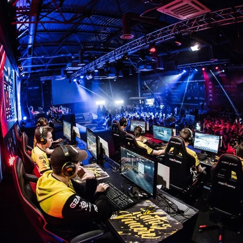

Сфера развлечений и досуга является одной из наиболее динамично развивающихся отраслей, и это происходит
благодаря активному внедрению современных технологий. Технологии преобразуют способы, которыми мы
проводим свободное время и наслаждаемся развлечениями. В этой статье мы рассмотрим, какие
технологические инновации преобразили сферу развлечений и досуга.

Виртуальная и дополненная реальность
Стриминговые сервисы

Киберспорт и гейминг
Виртуальная реальность (VR) и дополненная реальность (AR)
VR (виртуальная реальность) и AR (дополненная реальность) — это технологии, которые значительно
изменили способы нашего восприятия развлечений. VR позволяет нам полностью погружаться в виртуальные миры,
будь то игры, фильмы или музыкальные концерты. Это создает ощущение присутствия и взаимодействия с
виртуальным окружением.
AR, в свою очередь, добавляет элементы виртуального мира к реальной
среде, создавая уникальные и интерактивные опыты. Примером может служить приложение Pokémon Go, которое
интегрирует виртуальных персонажей и элементы игры в реальный мир, заставляя нас взаимодействовать с
ними.
Эти технологии не только изменяют способы, которыми мы наслаждаемся
развлечениями, но и открывают новые возможности для образования, медицины, бизнеса и других сфер жизни. Они позволяют нам создавать
более захватывающие и интерактивные взаимодействия, делая их более реалистичными и увлекательными.
Стриминговые сервисы
Стриминговые приложения — это сервисы, которые позволяют пользователям смотреть видео, слушать
музыку и играть в игры онлайн в режиме реального времени. Они изменили способ потребления медиаконтента,
сделав его более удобным и разнообразным.
Основные преимущества стриминга:
Доступность: можно смотреть фильмы, сериалы и слушать музыку где угодно, где есть интернет.
Разнообразие: широкий выбор контента, включая фильмы, сериалы, музыку, игры и подкасты.
Персонализация: платформы предлагают рекомендации на основе предпочтений пользователя.
Удобство: нет необходимости покупать диски или кассеты, всё доступно онлайн.
Социальные функции: возможность делиться контентом с друзьями и общаться в онлайн-сообществах.
Среди самых популярных стриминговых приложений в России можно выделить:
Кинопоиск HD — один из лидеров в области стриминга фильмов
и сериалов.
Яндекс.Музыка — музыкальный сервис с огромной
библиотекой треков и подкастов.
VK Видео — платформа для видеохостинга, где можно
найти практически любой контент.
Киберспорт и гейминг
Киберспорт — это соревновательная деятельность, основанная на видеоиграх, которая включает в себя
индивидуальные и командные соревнования, проводимые на профессиональном уровне. Он стал настоящей
индустрией благодаря развитию технологий и росту популярности видеоигр. Профессиональные игроки
соревнуются в компьютерных играх на мировых соревнованиях, а миллионы болельщиков следят за этими
событиями онлайн, что создает новые возможности для развлечения и спорта.